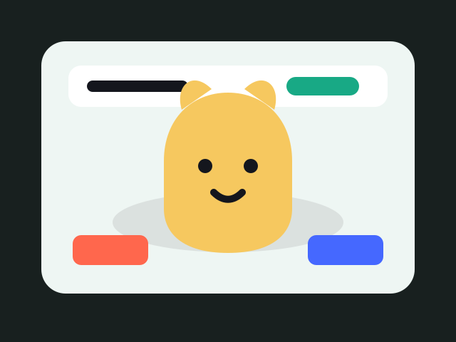
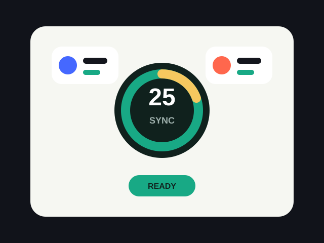
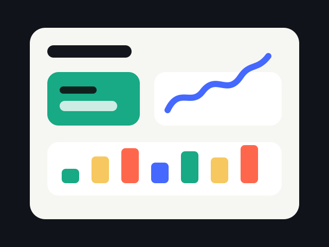
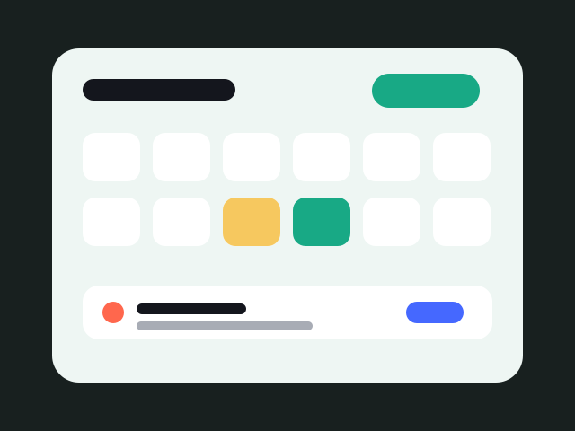

Başlamayı kolaylaştırmak
Kullanıcının kategori, süre ve görev seçerek odağa net bir başlangıç yapmasını sağlamak.
Oyunlaştırılmış çok oyunculu odak
Catudy, klasik timer deneyimini pet bakımı, ödül döngüsü, senkron çalışma odaları ve kişisel odak verileriyle daha bağlı kalınabilir bir üretkenlik oyununa dönüştürür.
Android Demo
Release APK dosyasını Android cihazına indirip Catudy'nin mevcut demo sürümünü kurabilirsin.
Amacımız
Catudy, kısa video tüketimi, bildirimler ve klasik timer uygulamalarının motivasyon eksikliğiyle ortaya çıkan odak problemlerini oyunlaştırma, pet bağlılığı ve sosyal çalışma ritmiyle çözmeyi hedefler.
Kullanıcının kategori, süre ve görev seçerek odağa net bir başlangıç yapmasını sağlamak.
Pet gelişimi, ödüller, kozmetikler ve arkadaşlarla lobby deneyimiyle devamlılık hissi oluşturmak.
Stats, calendar, manuel kayıtlar ve kategori dağılımlarıyla kullanıcının ilerlemesini anlaşılır hale getirmek.
Ayırt Edici Döngü
Catudy'nin ana farkı, seans tamamlamayı soyut bir sayaçtan çıkarıp petin ruh hali, gelişimi ve kozmetikleriyle görünür bir bağa çevirmesidir.
Ders, iş, okuma veya özel kategoriyle niyet netleşir.
Tek başına ya da lobby ile aynı anda odak sayacı başlar.
Odaklandıkça pet iyileşir; ihmal edildikçe görsel durum değişir.
Altın, kozmetik, istatistik ve daha iyi öneriler aynı döngüye bağlanır.
Özellikler
Seans, kategori ve süre bilgisiyle odak kaydı oluşturur; başarı durumunu Catudy verisine çevirir.

Pet açlık, mood ve gelişim durumuyla kullanıcının odak ritmine tepki verir.
Arkadaşlar aynı odada ready olur, senkron sayaçla birlikte çalışır ve mola oylaması yapar.
Geçerli seanslar altın kazandırır; kullanıcı petini ve profilini kozmetiklerle kişiselleştirir.
Günlük ve haftalık odak süreleri, kategori dağılımı ve performans trendleri grafiklerle takip edilir.
Geçmiş başarı verisine bakarak kullanıcıya daha gerçekçi seans önerileri sunar.
Takvim ekranında geçmiş odaklar incelenir; kullanıcı sonradan manuel çalışma kaydı ekleyebilir.
Odak seansı başlamadan önce yapılacak işler belirlenir, seans sonunda tamamlanan görevler görünür olur.
Catudy odak öncesinde kullanıcıyı bildirimleri azaltmaya yönlendirir ve dikkati bölen akışları sınırlamayı hatırlatır.
İçerik
Bu bölüm Catudy'deki ana içerik alanlarının ne işe yaradığını gösterir: odak başlatma, pet takibi, birlikte çalışma, istatistik ve takvim akışları.
Pet özeti, önerilen odak süresi, aktif görevler ve hızlı seans başlatma burada toplanır.

Odak davranışının görselleştiği, Catudy'nin en özgün ekranı.

Arkadaşlarla eş zamanlı çalışma ve ortak mola oylaması.

Günlük/haftalık odak süresi, kategori dağılımı, streak ve gelişim trendleri grafiklerle gösterilir.

Geçmiş seanslar takvimde incelenir; manuel çalışma kaydı bu ekrandan eklenir ve ayrı işaretlenir.
Ekip

Proje ekibi

Proje ekibi

Proje ekibi
Proje ekibi

Proje ekibi